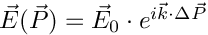

Class Hierarchy
This inheritance list is sorted roughly, but not completely, alphabetically:
[detail level 123]
| CGOAT::raytracing::asphericLensParms | |
| CGOAT::raytracing::asphericLensSide | Structure to describe one side of an aspheric lens The surface is described by  |
| ▼CGOAT::raytracing::Detector | The abstract Detector class provides an interface to a detector to store the information about the electric field into any kind of an array |
| CGOAT::raytracing::DetectorPlane | This class provides a plane detector, defined by its center point and its side length. The detector plane is spanned by the vectors e1 and e2. The absolute value of the vectors e1 and e2 are the cell widths in the corresponding direction |
| CGOAT::raytracing::Gauss | |
| CGOAT::raytracing::GlobalParms | |
| CGOAT::raytracing::grid | This class provides a grid used for inelastic scattering calculation |
| CGOAT::raytracing::gridEntry | Structure which holds all steps from the light source to the grid point In this structure every step is stored from the light source to the grid point and additonally the electric field at the grid point. For the electric field determination, only the Fresnel matrices, which describes the interaction between the ray and the object's surface, will be considered This structure is needed within the ultrashort pulse calculation |
| CGOAT::raytracing::indexList | |
| CGOAT::raytracing::lensParms | Structure, which holds the full information about the spheric lens The side surfaces of the lens are described by left and right. The thickness of the lens is described by offset and the height/radius of the lens by radius (for details, see also the documentation of the class sphericLens) |
| CGOAT::raytracing::lensSide | Structure to describe one side of an spheric lens For this type of lens one side can either be spherical (convex or concave) or flat |
| ▼CGOAT::raytracing::LightSrc | This abstract class is the basic class for all light sources used in this raytracing library. It provides all necessary interfaces |
| ▼CGOAT::raytracing::LightSrcGauss | This class describes a focused gaussian beam |
| CGOAT::raytracing::LightSrcGauss_mc | This class provides a gaussian beam with arbitrary distributed rays |
| ▼CGOAT::raytracing::LightSrcPlane | Class derived from LightSrc. It represents a plane wave described by the electric field  |
| CGOAT::raytracing::LightSrcPlane_mc | Plane wave with random ray distribution. This class provides a plane (square sized) wave with a given width. The rays are arbitrarily but uniformly distributed inside the light source area |
| CGOAT::raytracing::LightSrcRingGauss_mc | |
| CGOAT::raytracing::LightSrcRing_mc | Ring shaped light source. This class provides a ring shaped light source with arbitrary, uniform distributed rays within the light source area |
| CGOAT::raytracing::LightSrcRing | This class describes a ring shaped |
| CGOAT::maths::Matrix< T > | This class represents a threedimensional (numeric) Matrix as a template |
| CGOAT::maths::Matrix< double > | |
| CGOAT::maths::Matrix< std::complex< double > > | |
| CGOAT::raytracing::MemInfo | |
| CGOAT::raytracing::objectInfo | |
| ▼CGOAT::raytracing::ObjectShape | Abstract base class for all volume objects This abstract class provides a template for all volume objects. The refractive index is complex to be able to consider absorption |
| CGOAT::raytracing::Box | Class which represents a box (cuboid). It is derived by class ObjectShape This class is mainly used for the octree calculation |
| CGOAT::raytracing::Cone | This class represents a cone. The cone is defined by the reference point (position), the height and the radius |
| CGOAT::raytracing::Ellipsoid | This class represents an ellipsoid This class represents an ellipsoid, defined by its half axis a, b and c according to the formula:  |
| CGOAT::raytracing::asphericLens | Representation of aspheric lens The left and the right side is described by a formula  or the side can also be plano or the side can also be plano |
| CGOAT::raytracing::sphericLens | This class provides a lens with spherical surfaces The lens consists of two side surfaces and one lateral surface. The properties of the lens is described in the structure lp Each side surface can either be convex, concave or flat. The center of the lens is situate in the center between the to side surfaces. The distance between this surfaces is the offset parameter in lp. Left side (convex): |
| CGOAT::raytracing::surface | This class represents objects those surface is described by triangles |
| CGOAT::raytracing::Octree< T > | This template class is used for internal purposes and represents an octree |
| CGOAT::raytracing::OptProp | |
| CGOAT::raytracing::Plane | |
| CGOAT::raytracing::Point | |
| CGOAT::raytracing::pulseCalculation< T > | This class provides functionality to calculate field distributions for short pulses. |
| ▼CGOAT::raytracing::pulseCalculation< Raytrace_field_usp > | |
| CGOAT::raytracing::pulseCalculation_field | |
| CGOAT::raytracing::pulseCalculation_Field | This class provides functionality to calculate field distributions for short pulses. |
| ▼CGOAT::raytracing::RayBase | Abstract base class for all rays used for the raytracing process. This abstract base class for all rays is the parent class, from which all ray classes are derived |
| ▼CGOAT::raytracing::IRay | This class represents a single ray |
| CGOAT::raytracing::Ray_pow | This class provides a ray which carries a special power |
| CGOAT::raytracing::tubedRay | This class represents a ray with a finite cross section. class tubedRay: This class represents a ray with a finite cross section. Therefore it is defined by four edge rays and one probe ray in the middle. Therefore, selffocusing of the ray can be considered. Each of these rays has its own electric field and directional vector. The probe ray is used to decide wether an object is hidden or not |
| CGOAT::raytracing::rayListEntry | |
| ▼CGOAT::raytracing::Raytrace | This class provides all functionalities for the base raytracing code. It follows all rays from all light sources through the scene |
| CGOAT::raytracing::Raytrace_Field | Class which stores the electric field inside a box This raytracer can store the electric field even if there are objects in at least one box (we will call this box a "box detector"). The different box detectors must not interfere ! (In the moment, this will not be checked!) |
| CGOAT::raytracing::Raytrace_Field_usp | This class provides a raytracer to calculate the field distribution in a box detector for a ultrashort pulsed light source Unlike the class Raytrace_usp, the field in more than one object or in parts of objects can stored. As in Raytrace_usp, in the SuperArray grid the information (step length, index of the object involved in the step) for each step from the light source to the corresponding point in the grid is stored. For each reflection order one grid will be created. The field will be stored within one or more boxes (called "box detector") |
| CGOAT::raytracing::Raytrace_Inel | Class for calculating inelastic scattering (Raman) |
| CGOAT::raytracing::Raytrace_OT | This class provides functionality to calculate the forces for optical tweezers. It is derived by the class Raytrace |
| CGOAT::raytracing::Raytrace_Path | Class which stores the start and end points of each step into a file |
| CGOAT::raytracing::Raytrace_pure | This class makes a raytracing without any output (except detectors) In this ray tracing class no reactions at the surface is included. It is intended for calculation only with detectors |
| CGOAT::raytracing::Raytrace_usp | This class performs ray tracing in preparation for a later calculation of short pulses This class performs ray tracing and stores the length and the refractive index as an index of each step into a SuperArray class named SA. This information is necessary for the calculation of the short pulses |
| CGOAT::raytracing::RRTParms | |
| CGOAT::raytracing::RRTParmsInfo | Class used to set the parameters for inelastic scattering (may replaced later) |
| CGOAT::raytracing::Scene | Class defining a scene with lightsources and objects. This is a container used to inform the Raytracer about all necessary settings. Here, all informations about light sources and objects are stored. Light sources are described by classes derived from the virtual LightSrc base class. All objects are described by classes derived from the virtual class ObjectShape |
| CGOAT::raytracing::shortPulse | Class for the calculation of short pulses |
| CGOAT::raytracing::stepEntry | Structure to store the information about one raytracing step In this structure, the information about a single raytracing step is stored. It is used within the ultrashort pulse calculation process |
| CGOAT::raytracing::StrahlArray | |
| CGOAT::raytracing::StrahlInfo | |
| CGOAT::raytracing::SuperArray< T > | Template class to store arbitrary information in a 3D-grid This template class provides a virtual 3D-grid of arbitrary values which can be used to store e.g. the electric field in a volume. It circumscribes a sphere with radius r0 and virtual means here, that only the parts which are needed were allocated, but for the programmer it seems like a whole array or grid. By adding an object to the grid, the memory for the grid around the object (circumscribed box) is allocated, so one can store the electric field inside the object. The cells of the grid can be addressed with help of the bracket()-operator with different arguments |
| CGOAT::raytracing::SuperArray< GOAT::maths::Vector< std::complex< double > > > | |
| CGOAT::raytracing::SuperGrid< T > | |
| CGOAT::raytracing::SysMemInfo | |
| CGOAT::raytracing::Trafo | This class calculates the time dependence of a field which calculated before |
| CGOAT::raytracing::TrafoParms | Structure, which acts as a container for all informations needed to process the calculation. |
| CGOAT::raytracing::triangle | This class describes a triangle, represented by its corner points. It is intented for internal purposes. The triangle class is mainly used in class surface |
| CGOAT::raytracing::tubedRayBuffer | |
| CGOAT::maths::Vector< T > | Template class for threedimensional vectors |
| CGOAT::maths::Vector< double > | |
| CGOAT::maths::Vector< INDEX_TYPE > | |
| CGOAT::maths::Vector< int > | |
| CGOAT::maths::Vector< std::complex< double > > | |
| CGOAT::raytracing::wavelengthRange |